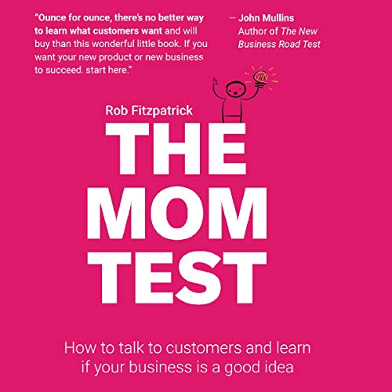

Library › Business & Startups
The Mom Test — Summary & Key Lessons

How to talk to customers and learn if your business is a good idea when everyone is lying to you.
📖 OPEN THE FULL INTERACTIVE BREAKDOWN →🌐 Read it in Hindi, Hinglish, Gujarati, Tamil & 22 more languages — free, with audio.
💡 The Big Idea
Customer conversations are the cheapest startup insurance — and almost everyone does them wrong, collecting compliments ('sounds great, I'd buy it!') that evaporate at the checkout. Fitzpatrick's rules, named for the ultimate biased audience: talk about THEIR life, not your idea; ask about SPECIFICS in the past, not opinions about the future ('what did you do last time?' beats 'would you ever?'); and talk less, listen more. Deflect the three data-corruptors — compliments (worthless), fluff (generic claims, hypotheticals — 'I usually/I would/I might'), and ideas (feature requests to note, not obey) — and dig for the gold: money already spent, workarounds already built, time already lost. Then demand ADVANCEMENT: real meetings end in commitment (time, reputation, or money) — 'sounds interesting, keep me posted' is a polite rejection wearing praise.
🧠 The 6 Key Lessons
Lesson 1: The Mom Test: Three Rules That Fix Every Question
Chapters 1–2: The Mom Test / Avoiding Bad Data
Asking 'do you think it's a good idea?' invites lies — not from malice but kindness: people protect your feelings, enjoy hypotheticals, and love sounding supportive; your mom is just the extreme case of everyone. The Mom Test's three rules repair any question: (1) Talk about THEIR LIFE instead of your idea (the idea's mention contaminates everything after it); (2) Ask about SPECIFICS IN THE PAST instead of generics or future opinions ('when did this last happen? walk me through it' — people are honest historians and fantasist forecasters); (3) TALK LESS, LISTEN MORE. Pass the test and even your mom can't lie to you — because you're collecting facts about her actual behavior, not verdicts on your dream. The reframe that changes founders: customer conversations aren't pitches with question marks; they're archaeology — you're excavating what people already DO, PAY, and SUFFER, because the past is the only honest testimony available.
📖 Example: Fitzpatrick's opening demolition: the fictional founder asking mom about an iPad cookbook app — 'Would you buy an app like that?' 'Well, I do love you, dear...' — every answer warm, every answer worthless, $10,000 of development later, zero customers. The… Read the full example →
⚡ Do this: Rewrite your three most important validation questions to pass all three rules: no idea-mention, past-specific, listener-mode. Test: could the person answer helpfully WITHOUT knowing what you're building? If not, it fails the Mom Test.
Lesson 2: Deflect Compliments, Anchor Fluff, Dig Beneath Ideas
Chapter 3: Asking Important Questions
Three contaminants corrupt conversation data. COMPLIMENTS ('cool idea!', 'I love it') are the fool's gold — deflect and return to facts, because compliments predict nothing and feel like everything. FLUFF is the generic layer: claims ('I ALWAYS...'), hypotheticals ('I WOULD definitely...'), and futures ('I'm GOING to...') — never build on fluff; ANCHOR it to reality: 'you say you always struggle with this — when did it last happen? what did it cost you? what did you try?' Watch the always dissolve into 'well, once, last year...' IDEAS (feature requests, 'you should add...') are data about their itch, not instructions — dig beneath every one: 'why do you want that? what would it let you do? how are you coping without it?' Sometimes the request's root reveals a bigger problem; usually it reveals a passing fancy. The chapter's hardest medicine: the questions that matter are the SCARY ones — the ones that could kill your idea ('does this problem actually cost you anything?') — and founders systematically avoid them, preferring ten safe conversations to one terrifying, decisive answer.
📖 Example: The anchoring demo Fitzpatrick replays: a founder told 'I would TOTALLY pay for that' — the fluffiest of golden fluff — who learns to respond 'that's great — when did you last hit this problem?' and watches the enthusiast fail to recall a single instance:… Read the full example →
⚡ Do this: In your next five conversations, practice the three deflections: compliment → 'thanks — so walk me through the last time...'; fluff-claim → 'when did that last happen?'; feature idea → 'why? what would that let you do?' Then write your three scariest questions — the potential idea-killers — and lead with them.
Lesson 3: Commitment and Advancement: Meetings That Don't Lie
Chapters 5–6: Commitment and Advancement / Finding Conversations
The meeting-outcome taxonomy: every conversation ends in one of three ways — it FAILED (you got compliments and fluff, learned nothing, secured nothing), it ADVANCED (they gave up something of value), or it produced clear data. The currencies of real commitment: TIME (a scheduled follow-up with stakes, a half-day trialing your mockup), REPUTATION (introductions to their boss, their team, other customers — spending social capital on you), and MONEY (LOIs, pre-orders, deposits — the loudest testimony). The polite killers to stop celebrating: 'sounds interesting, keep me posted,' 'I love it — let me know when it launches,' 'I'd definitely try that' — all are ZERO-currency exits; a meeting without an ask was a wasted meeting, so ALWAYS push for the next concrete step sized to your stage. Fitzpatrick's early-customer truth: the people who respond to vision with commitment despite the roughness are your actual first market — collect them; the lukewarm majority are data, not destiny.
📖 Example: The tale of two pilots: Founder A exits a 'great meeting' — the executive loved everything, said stay in touch — currency exchanged: none; probability this goes anywhere: rounding error. Founder B's awkward meeting ends with the buyer agreeing to run a… Read the full example →
⚡ Do this: Define the advancement ask for your current stage BEFORE each meeting (intro? trial? pre-order? scheduled follow-up with their data?). End every conversation with it explicitly. Track meetings in two columns only: advanced / failed — 'went well' is no longer a category.
Lesson 4: Keep It Casual, Segment Ruthlessly, and Share the Learning
Chapters 7–8: Choosing Your Customers / Running the Process
Process corrections that rescue the method. KEEP IT CASUAL: the best customer learning rarely happens in formal 'user interviews' — three Mom-Test questions at a conference, in a comment thread, at the school gate outperform scheduled interrogations (formality triggers performance; casualness triggers truth), and early on, you don't need meetings — you need conversations. SEGMENT before you converse: 'everyone' is not a customer — slice until you have a findable, consistent group ('startup founders' → 'bootstrapped SaaS founders at $10-50k MRR who do their own support'), because mixed segments produce averaged, useless signals (half love it, half shrug — meaning you interviewed two different markets). And DON'T BE THE LEARNING BOTTLENECK: notes shared instantly with the whole team, verbatim quotes over summaries, and everyone building exposed to raw customer reality — because learning trapped in the founder's head (or worse, filtered through their optimism) reproduces the exact guessing the whole method exists to kill.
📖 Example: Fitzpatrick's conference-hallway exhibit: a founder learns more in three casual chats over coffee breaks — 'how are you handling X these days?' — than in a month of scheduled Zoom interviews, because nobody performs for a hallway. His segmentation surgery: a… Read the full example →
⚡ Do this: Slice your segment until it's findable-and-consistent (write the sentence: WHO, at WHAT stage, with WHAT behavior). Have three casual Mom-Test conversations this week — no calendar invites, no pitch. And install the team rule: raw notes and verbatim quotes shared same-day, founder summaries banned.
Lesson 5: Prep and Review: The Three Big Questions
Chapter 8: The Process — Before, During, After
Fitzpatrick's process chapter is the discipline most founders skip: a conversation without PREP wastes the customer's time, and one without REVIEW wastes yours. BEFORE: with your team, write the THREE BIG QUESTIONS — the three things you most need to learn from this specific person (they differ by segment: the enterprise buyer knows budget realities; the end user knows daily pain) — and crucially, make at least one of them a question that could HURT: the scary question you're tempted to avoid is usually the one carrying the company-saving answer ('if we're going to get bad news, better to get it now and cheap'). Knowing your three also frees you to keep the conversation casual — you're not working through a questionnaire; you're steering a chat toward three landmarks. DURING: take notes in the customer's exact words (verbatim quotes are portable evidence; your paraphrases are contaminated by hope), and note the emotions beside the facts — the shrug matters as much as the sentence. AFTER: review with the team same-day: what did we learn, what surprised us, which beliefs got updated, and — the meta-question — were our three questions the RIGHT three? Update the list for the next conversation; the questions themselves should evolve as fast as the answers.
📖 Example: Fitzpatrick's contrast pair: the founder who 'talks to customers constantly' but arrives with no questions, chats warmly, and leaves with vibes — versus the two-person team who spend ten minutes pre-writing their big three ('Do agencies actually track this… Read the full example →
⚡ Do this: Before every customer conversation this week: write your three big questions, and force one to be scary. During: capture five verbatim quotes minimum. After: run the ten-minute debrief same-day — learned, surprised, updated — and rewrite the three questions for the next conversation. The loop, not the meeting, is the method.
Lesson 6: Talk About Their Life, Not Your Idea
The Mom Test
Fitzpatrick's rule: in customer conversations, ask about their past behavior and current problems, never pitch your idea and never ask 'would you buy this?' — because people lie to be nice and mispredict the future. The truth lives in their stories about what they've already done, tried and paid for.
📖 Example: Asking a founder 'would you use our analytics tool?' gets a polite yes. Asking 'tell me about the last time you tried to understand your user data' reveals whether the problem is real, painful and worth solving — or imaginary. Read the full example →
⚡ Do this: Rewrite your next five customer questions to be about their past behavior and current frustrations, with zero mentions of your product.
✅ 5-Step Action Plan
- Rewrite validation questions: their life, past specifics, listener-mode.
- Deflect compliments, anchor fluff to the last real instance, dig under ideas.
- Lead with the three scariest questions — the potential killers.
- End every meeting with a currency ask: time, reputation, or money.
- Slice the segment, keep it casual, share raw notes same-day.
⚠️ When This Doesn't Work
The Mom Test's core rule — 'ask about behaviour, not opinions' — is the best customer research advice ever written, and Coolest Cooler is its graveyard: 62,000 people pledged $13 million, the largest Kickstarter in history, and the company still collapsed because pledges are not purchases. Even behaviour-based signals can lie when the behaviour is 'saying yes to a fun idea with no money at stake'. The test isn't complete until money changes hands.
💀 The Graveyard Proves It
🧊 Coolest Cooler — Kickstarter's Biggest Hit Became Its Biggest Lesson. Burn: $13M raised; 20,000 backers never got coolers. Read the full case study →
💬 Best Quotes from The Mom Test
- “They say you shouldn't ask your mom whether your business is a good idea. That's technically true, but it misses the point: you shouldn't ask ANYONE.”
- “Opinions are worthless. Only the market can tell you the truth.”
- “If they haven't looked for ways of solving it already, they're not going to look for (or buy) yours.”
Interactive version: mark lessons as read, listen in your language, share quote cards.